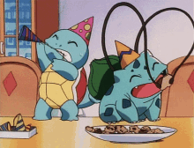
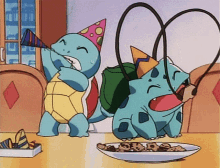
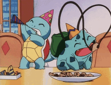
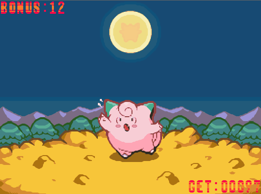
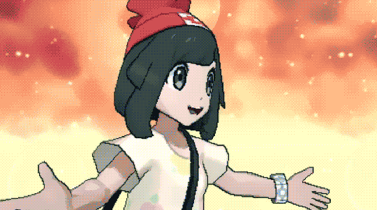

 ————————————————————————————————
————————————————————————————————MY FAVORITE POKEMON GAMES
PLATINUM ———————————————————————————————This is the very first pokemon game I have ever played. I don't remember anything about my first playthroughs except that I kept resetting because I was too young to understand how to play it. For a very long time I didn't know that pokemon was a series because Nintendo stuff was basically nonexistent where I'm from at the time so for many years I just played Platinum over and over. This caused an irrepairable chemical reaction in my brain where Sinnoh is now one of my favorite regions because of nostalgia. I've played Platinum more times than I would like to admit and I agree with all the criticism of how DPPT is boring and slow (I never played the predecessors) but I just can't help but love it anyway.
The national dex up until Gen 4 is amazing with the variety of pokemon and evolutions (though I love the addition of fairy types in Gen 6). Giratina is my first ever legendary and to this day my favorite legendary still (especially because of watching Giratina and the Sky Warrior but that movie made me hate Shaymin because I thought it was annoying as hell). I have memories still of kid-me playing with the Veilstone slots for hours and getting lost in caves/getting stuck in wild pokemon battles.
SUN/MOON ———————————————————————————————Forget what every single Gen 5 fan has said about BW+B2W2 being the peak of pokemon they are all wrong SUN/MOON IS THE PEAK OF POKEMON. Literally the best story in the mainline series, super fun mechanics, amazing starter trio and pokemon variety. Ultra beasts are awesome I don't care what anyone says I rly like the mystery behind them and their whole lore (Blacephalon and Xurkitree ended up being one of my favorite pokemon). I think The introduction of regional forms is one of the best things to happen to this franchise. I love how quirky rotom-dex is. Super cool region geography. Best UI design of all games so far don't even debate me on this. Seriously this game just oozes so much personality, it's definitely up there on the best pokemon games of all time and if anyone says so otherwise they are ALLERGIC TO GOOD OPINONS!!!
The only criticism I have of this generation is that I wish they made USUM more like sequels rather than upgraded versions/slightly different storyline SM. But I still enjoyed Ultra Sun nonetheless. I have over three hundred hours on Sun and that was the first pokemon game I got on release date and the first I completed the dex on. I would bring my 3DS to school and team up in the battle tree alongside one other classmate who had Moon and a core memory is when we both freaked out over getting to challenge Red and Blue at the end. Also the first game where I bothered to breed pokemon and got into EV/IV nerd shit. I have a lot of good memories of this generation. Also the SM anime is amazing I didn't watch all of it but the artstyle is so good.
PMD:EOS ———————————————————————————————Honestly the Mystery Dungeon series should be milked more this shit is way more fun than the mainline games. Roguelike pokemon best invention ever. I actually grew up with Explorers of Sky alongside Platinum I think that's why I like Sinnoh so much. The story's good but the gameplay and mechanics of EOS will never get old, literally one of the most amazing pokemon games ever I want everyone who is a pokemon fan to at least try playing EOS. This shit was my first roguelike game before I knew what a roguelike was. You want pixel graphics in a pokemon game??? FORGET ABOUT PLAYING THE OLDER MAINLINE GAMES play EOS, the sprites for all the pokemon, the cutscenes and animations, the background and map design is literally all so gorgeous. The best part!!! You get to play as a pkmn!!!

I need to talk about how bullshit this game can be to the point where its actually a fun and challenging pokemon game. Yes you read that right a CHALLENGING POKEMON GAME it's the stuff of myths. There's moves and abilities that are whatever in the mainline games but you take them from a turn-based rpg and put it into a randomly-generated map exploring roguelike and it's like. Bro. And the new mechanics on top. Peak pokemon I'm not exaggerating. I love the satisfaction of using room-clearing moves in monster houses I love the satisfaction of finally collecting enough bulletin board/outlaw notice board requests and clearing them all in one go. I love Spinda's Cafe I love collecting secret maps and stat-boosting and increasing pokemon's IQ. Also don't get me started on Destiny Tower and Zero Isle I actually cannot believe they put that in a pokemon game I never managed to clear any of those and it's crazy the amount of strategizing you have to do only to fail to unpredictable circumstances beyond your control... Also the whole lore about pokemon guilds and mystery dungeons is so fun I used to roleplay PMD shit when I was younger it was actually one of the best things ever. It's one of those games that when you pick it up you can't put it down.
————————————————————————————————MY FAVORITE POKEMON
Here's a list of my favorite pokemon. It's more or less in descending order.

If I really really had to pick a favorite pokemon it would be Porygon. I'm not sure why Porygon is so captivating to me but I think it's simple and cute and the concept of a manmade pokemon that lives inside computers is sick. Also when it evolves it gets upgraded software, and when it evolves again it gets infected by virus. Tell me that's not the most creative coolest thing ever... But if I could pick multiple favorites it would be Porygon, Bulbasaur, Togepi and Clefairy. Bulbasaur is my favorite starter and somewhere along the way it overtook Popplio probably because there's so much more merch and media of Bulbasaur. It's a very iconic pokemon and it's the best Kanto starter you can't change my mind. Clefairy and Togepi are there because they are the cutest pokemon they are like marketable plushies to me.
My favorite type of all is normal it's such a nothing typing no one ever thinks of but if you really stop to think about it all the banger pokemon design are normal types. I don't remember when normal became my favorite typing but I never had a favorite typing until I stopped to think about how cool and overlooked they are. Mascot favorites like Meowth, Snorlax, Ditto, the majority of regional birds, they are all normal types... The god of pokemon is normal type... All the cute baby looking pokemon are normal type... Who cares that they are often weak competitively and bring nothing to the type matchup game I think they are perfect.
My second favorite type is fairy because all the fairy pokemon are always cute. Yes I know there is some that goes outside of that character design check mark but all the good fairy types are pink or cute. Also #noticing how my favorite fairy types used to be normal types. My third favorite type is a tie between steel and ground.
————————————————————————————————ULTIMATE POKEMON QUIZ